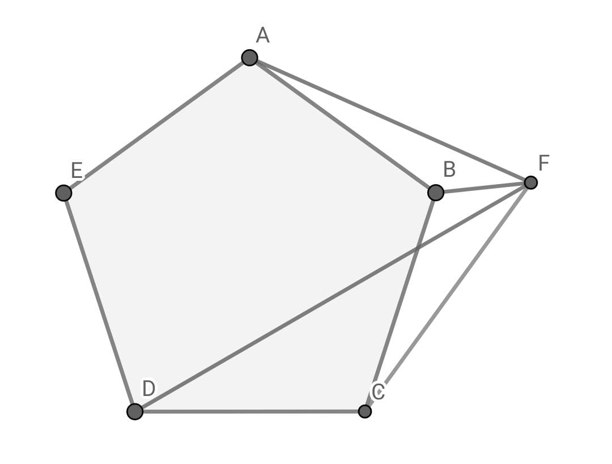

2:15:00
(3 points)
Find the last digit number of $$\prod_{n=5}^{15}\Bigl(n^2-16n+39\Bigl)\Bigl(n+2023\Bigl)$$
(3 points)
Suppose there is a large circle with a radius $r_{1}$ and a smaller circle inside it with a radius $r_{2}$, where $\frac{r_{2}}{r_{1}}=\frac{3}{16}$ Find the ratio of the area left after cutting the smaller circle from the larger one to the area of the large circle.
(3 points)
How many quadrilaterals can be formed by joining the vertices of a decagon?
(4 points)
How many numbers less than 2023 are divisible by 3 or 5?
(4 points)
Let the following sequence is in Arithmetic progression with a common difference between terms equal to $d$ $$2^a\cdot 3^b,3^b\cdot5,3^3\cdot2^c,3^b\cdot7,2^3 \cdot 3^b, \dots$$ Find $d$
(5 points)
Among a group of students, 64 study number theory, 16 study geometry and 32 study algebra. If 4 of these students study combinatorics, number theory and geometry, 2 study geometry and algebra, 8 study number theory and algebra and 1 study number theory, geometry and algebra, find the number of students in the group.
(5 points)
Define three linear functions $f(x)$, $g(x)$, and $h(x)$ such that $$f(g(1011))+g(h(1011))+h(f(1011))-\Bigl(g(f(1011))+h(g(1011))+f(h(1011))\Bigl)=-2023$$ Find the value of $$g(f(2022))+h(g(2022))+f(h(2022))-\Bigl(f(g(2022))+g(h(2022))+h(f(2022))\Bigl)$$
(5 points)
A math problem is presented to 99 contestants numbered from 1 to 99 let that the probability of the contestant number $n$ to solve the problem is equal to $\frac{1}{n+1}$. The probability of the problem to be solved by at least 1 contestant can be written as $\frac{a}{b}$ find $a+b$
(5 points)
ABC is a right angled triangle at $B$, $D$ is a point on $AC$ such that $BD$ is the angle bisector of $\angle ABC$ Find $$\Bigl(\frac{BD}{AD}\Bigl)^2+\Bigl(\frac{BD}{CD}\Bigl)^2$$
(7 points)
Let $x$, $y$, and $z$ are three positive integers such that $$\Bigl(y^2+xy+yz+zx+2y+x+z+1\Bigl)\Bigl(x+z+1\Bigl)=2023$$ Find $x+y+z$
(7 points)
How many positive integers less than 102 have exactly 4 positive factors?
(7 points)
Let $a,b,c,d$ are primes such that $$a+b+c+d=121$$ $$a^2+b^2+c^2+d^2=10375$$ Find $a^3+b^3+c^3+d^3 - \frac{3abcd}{2}$
(8 points)
How many four digit numbers existed such that the Greatest common divisor of the four digits is equal to one.
E.G.: the number 5863 is counted because the $\gcd(5,8,6,3)=1$
(8 points)
Let $x,y, \& z$ are three positive numbers such that $xyz= \frac{1}{2}$ Find the minimum value of $$\sqrt{\Bigl(x^2+y^2+1\Bigl)\Bigl(x^2+y^2+z^2\Bigl)}$$
(8 points)
Three vertices of a cube are $A=(14,24,20)$, $B=(16,16,2)$, and $C=(22,6,18)$. What is the lateral area of the cube?
(10 points)
ABCDE is a regular pentagon, F is a point such that $\angle FDC=30^{\circ} $ anticlockwise with the ray DC (as shown in fig. below), $\angle BCF=18^{\circ}$ clockwise with the ray CB, find $\angle AFB$

(11 points)
Consider a function $$f(x)=\lfloor \frac{x}{5} \rfloor$$ How many numbers less than $5^7$ such that Among $(x,f(x), f^{2}(x), \dots , f^{6}(x))$ There is at most 3 of them divisible by 5\\ NOTE: $f^{2}(x)= f(f(x))$ not $f(x) \cdot f(x)$
(14 points)
Known that $\frac{1}{a_{n}}= \frac{n}{n-1} \cdot \frac{1}{a_{n-1}}+\frac{n+1}{n+2} \cdot a_{n+1}$ \& $a_{1}=2$ \& $a_{2}=\frac{3}{4}$\\ Find $$\frac{(1000!)^2}{\prod_{n=2}^{1000} \Bigl(n^2-n^2 a_{n}+1\Bigl)}$$
(15 points)
In a 21-Dimensional cuboid with side lengths $(\sqrt{1},\sqrt{2},\sqrt{3}, \dots , \sqrt{21})$, one vertex is fixed at point P. We define a "blacky" as the distance between P and any other vertex, such that the square of this distance is divisible by 7. How may such "blackys" exist in this cuboid?
Submit
©Copyright
Logarithm
, all rights reserverd